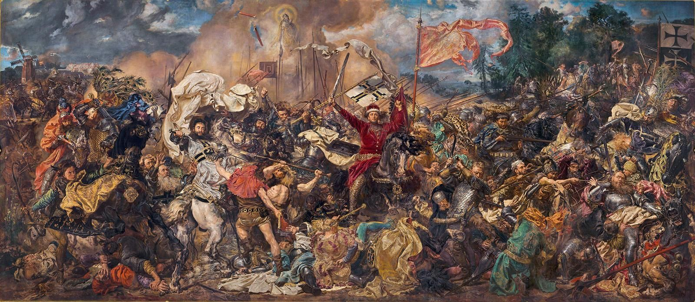

<div class="owl-carousel">
    <div class="item">
        <div class="banner">
            
        </div>
    </div>
    <div class="item">
        <div class="banner">
            
        </div>
    </div>
    <div class="item">
        <div class="banner">
            
        </div>
    </div>
</div>

<!-- Подключаем стили CSS с внешнего CDN -->
<link rel="stylesheet" href="https://cdn.jsdelivr.net/npm/owl.carousel@2.3.4/dist/assets/owl.carousel.min.css">
<link rel="stylesheet" href="https://cdn.jsdelivr.net/npm/owl.carousel@2.3.4/dist/assets/owl.theme.default.min.css">

<!-- Подключаем jQuery с внешнего CDN -->
<script src="https://code.jquery.com/jquery-3.6.0.min.js"></script>

<!-- Подключаем плагин Owl Carousel с внешнего CDN -->
<script src="https://cdn.jsdelivr.net/npm/owl.carousel@2.3.4/dist/owl.carousel.min.js"></script>


<script>
    $(document).ready(function () {
        $('.owl-carousel').owlCarousel({
            loop: true, //Зацикливаем слайдер
            margin: 10, //Отступ от картино если выводите больше 1
            nav: false, //Отключил навигацию
            autoplay: true, //Автозапуск слайдера
            smartSpeed: 1000, //Время движения слайда
            autoplayTimeout: 2000, //Время смены слайда
            responsive: { //Адаптация в зависимости от разрешения экрана
                0: {
                    items: 1
                },
                600: {
                    items: 1
                },
                1000: {
                    items: 1
                }
            }
        });
    });

</script>

<!-- Подключаем стили Swiper -->
<!-- <link rel="stylesheet" href="https://unpkg.com/swiper/swiper-bundle.min.css"> -->


<!-- HTML-код для контейнера баннера и кнопок навигации -->
<!-- <div class="swiper-container">
    <div class="swiper-wrapper">
        <div class="swiper-slide">
            <div class="banner">
                
            </div>
        </div>
        <div class="swiper-slide">
            <div class="banner">
                
            </div>
        </div>
        <div class="swiper-slide">
            <div class="banner">
                
            </div>
        </div>

    </div>

    <div class="swiper-button-prev"></div>
    <div class="swiper-button-next"></div>
</div> -->


<!-- Подключаем скрипт Swiper -->
<!-- <script src="https://unpkg.com/swiper/swiper-bundle.min.js"></script> -->


<!-- <script>
    var mySwiper = new Swiper('.swiper-container', {
        // Опции Swiper
        loop: true, // Делаем бесконечное перелистывание
        navigation: {
            nextEl: '.swiper-button-next', // Кнопка "Вперед"
            prevEl: '.swiper-button-prev' // Кнопка "Назад"
        },
        breakpoints: {
            320: {
                slidesPerView: 1,
            },
            480: {
                slidesPerView: 2,
            },
            920: {
                slidesPerView: 3,
            },
        },
    });
</script> -->